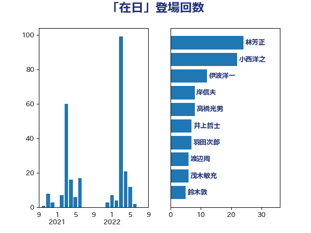

単語「在日」

| 林芳正 | 自由民主党 | 24 回 |
| 小西洋之 | 立憲民主党 | 22 回 |
| 伊波洋一 | 無所属 | 12 回 |
| 岸信夫 | 自由民主党 | 8 回 |
| 高橋光男 | 公明党 | 8 回 |
| 井上哲士 | 日本共産党 | 7 回 |
| 羽田次郎 | 立憲民主党 | 7 回 |
| 渡辺周 | 立憲民主党 | 6 回 |
| 茂木敏充 | 自由民主党 | 6 回 |
| 鈴木敦 | 国民民主党 | 5 回 |
| 上田清司 | 国民民主党 | 4 回 |
| 河野太郎 | 自由民主党 | 4 回 |
| 大塚耕平 | 国民民主党 | 3 回 |
| 小田原潔 | 自由民主党 | 3 回 |
| 山際大志郎 | 自由民主党 | 3 回 |
| 岡田克也 | 立憲民主党 | 3 回 |
| 徳永久志 | 立憲民主党 | 3 回 |
| 比嘉奈津美 | 自由民主党 | 3 回 |
| 田島麻衣子 | 立憲民主党 | 3 回 |
| 田村智子 | 日本共産党 | 3 回 |
| 穀田恵二 | 日本共産党 | 3 回 |
| 佐藤茂樹 | 公明党 | 2 回 |
| 吉田宣弘 | 公明党 | 2 回 |
| 宮崎政久 | 自由民主党 | 2 回 |
| 島尻安伊子 | 自由民主党 | 2 回 |
| 川合孝典 | 国民民主党 | 2 回 |
| 篠原豪 | 立憲民主党 | 2 回 |
| 荒井優 | 立憲民主党 | 2 回 |
| 西銘恒三郎 | 自由民主党 | 2 回 |
| 赤嶺政賢 | 日本共産党 | 2 回 |
| 鈴木庸介 | 立憲民主党 | 2 回 |
| 音喜多駿 | 日本維新の会 | 2 回 |
| 高良鉄美 | 無所属 | 2 回 |
| 鬼木誠 | 立憲民主党 | 2 回 |
| あべ俊子 | 自由民主党 | 1 回 |
| 三宅伸吾 | 自由民主党 | 1 回 |
| 伊藤俊輔 | 立憲民主党 | 1 回 |
| 勝部賢志 | 立憲民主党 | 1 回 |
| 古川禎久 | 自由民主党 | 1 回 |
| 山本剛正 | 日本維新の会 | 1 回 |
| 山添拓 | 日本共産党 | 1 回 |
| 斉藤鉄夫 | 公明党 | 1 回 |
| 新垣邦男 | 立憲民主党 | 1 回 |
| 末松義規 | 立憲民主党 | 1 回 |
| 松原仁 | 立憲民主党 | 1 回 |
| 森山浩行 | 立憲民主党 | 1 回 |
| 水岡俊一 | 立憲民主党 | 1 回 |
| 河野義博 | 公明党 | 1 回 |
| 浅田均 | 日本維新の会 | 1 回 |
| 浦野靖人 | 日本維新の会 | 1 回 |
| 片山大介 | 日本維新の会 | 1 回 |
| 空本誠喜 | 日本維新の会 | 1 回 |
| 舩後靖彦 | れいわ新選組 | 1 回 |
| 藤岡隆雄 | 立憲民主党 | 1 回 |
| 長峯誠 | 自由民主党 | 1 回 |
| 阿部知子 | 立憲民主党 | 1 回 |
| 青柳仁士 | 日本維新の会 | 1 回 |